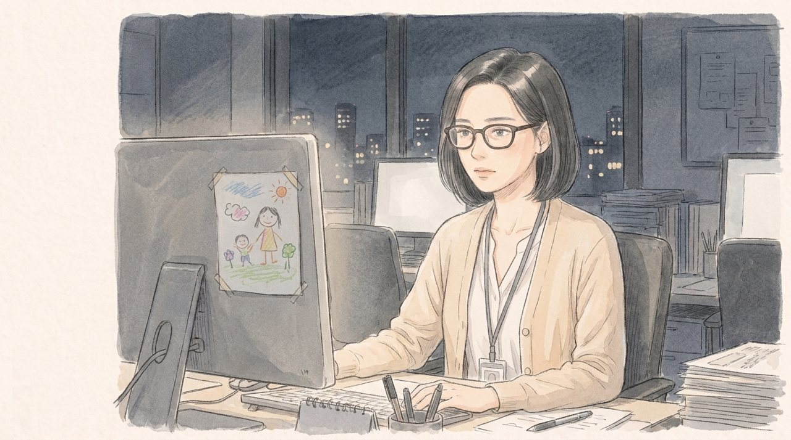
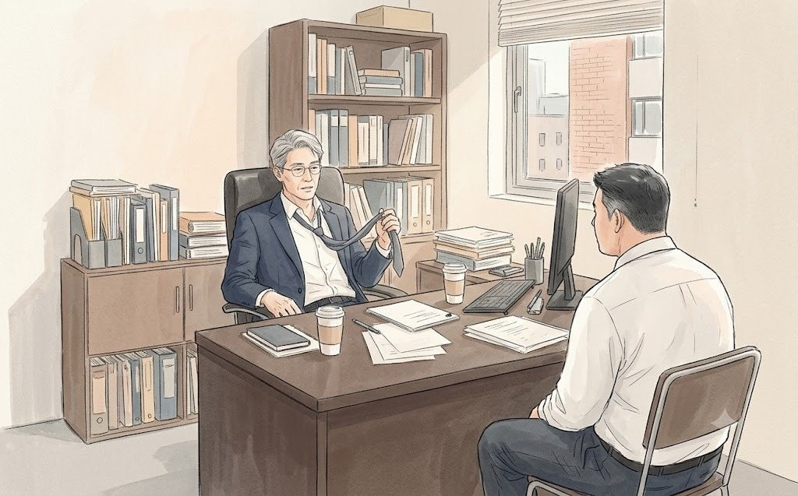
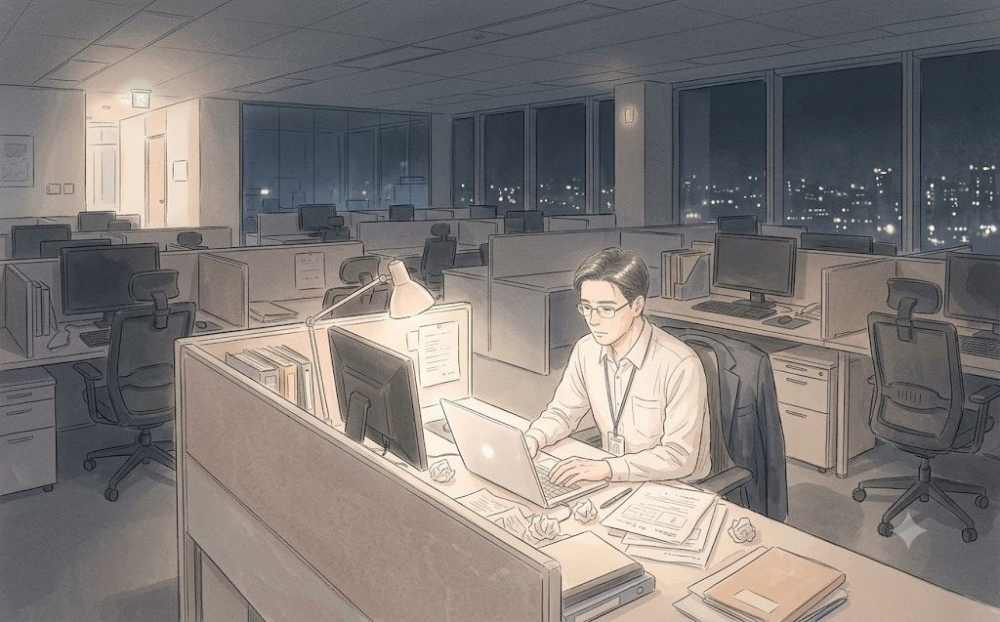

정오 연재소설 · 서랍출판
미안하다, 내일도 미안하겠지만
2021년 봄, 광화문 29층. 토요일 아침 7시 회의가 시작됐다.
회사에서 하지 못한 말을, 서랍에 넣어 두었습니다.
연재 목록 · 공개 8화

[EP8] 빠진 한 페이지시즌 1 · 약 4.8천 자 [EP7] 연휘는 할인하지 않는다시즌 1 · 약 3.9천 자
[EP7] 연휘는 할인하지 않는다시즌 1 · 약 3.9천 자 [EP6] IT는 6개월입니다시즌 1 · 약 4.7천 자
[EP6] IT는 6개월입니다시즌 1 · 약 4.7천 자 [EP5] 순댓국집의 기억시즌 1 · 약 3.8천 자
[EP5] 순댓국집의 기억시즌 1 · 약 3.8천 자
[EP4] 회의록의 한 줄시즌 1 · 약 4.8천 자 [EP3] 결제까지 아홉 번시즌 1 · 약 5.0천 자
[EP3] 결제까지 아홉 번시즌 1 · 약 5.0천 자
[EP2] 새벽 5시 반의 29층시즌 1 · 약 5.5천 자 [EP1] 테이블 쪼개기 회식시즌 1 · 약 5.2천 자
[EP1] 테이블 쪼개기 회식시즌 1 · 약 5.2천 자
작품 소개
가상의 뷰티 기업 '청연'에서, 성장이 멈춘 온라인 사업을 다시 세우려는 네 사람의 이야기입니다. 매주 월·수·금 아침 7시에 두 편씩 공개됩니다.
실화를 바탕으로 재구성한 픽션이며, 등장 인물·단체는 실제와 관계없습니다.
© 정오 · 서랍출판 · 무단 복제와 게시를 금합니다.
© 정오 · 서랍출판 · 무단 복제와 게시를 금합니다.